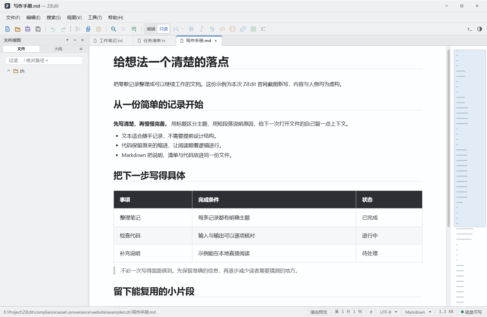
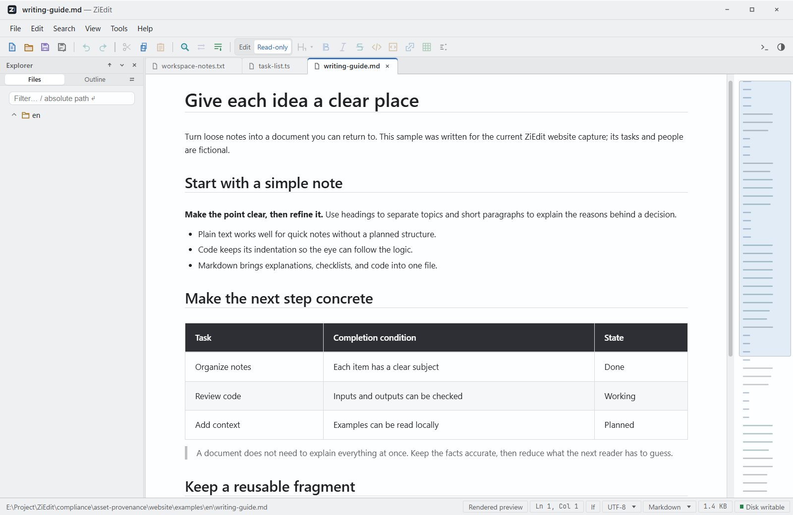

编码识别Encoding detection
按 BOM、文件内声明与内容特征识别编码，可手动切换并按新编码重读Detects encoding via BOM, in-file declarations, and content heuristics; switch manually to re-read the file
ZiEdit
支持文本、代码、Markdown、CSV/TSV、图片、docx、xlsx 与 PDF，本地运行，无需联网与账号。Supports text, code, Markdown, CSV/TSV, images, docx, xlsx, and PDF. Runs locally — no network or account required.
目前仅在 Windows 上测试；macOS 与 Linux 由 CI 构建，未经实机测试。Only Windows has been tested on real hardware; macOS and Linux packages are built by CI and untested on real machines.


文本 · 代码 · Markdown · CSV / TSV · 图片 · docx · xlsx · PDF · 双文件对比Text · Code · Markdown · CSV / TSV · Images · docx · xlsx · PDF · File comparison
按 BOM、文件内声明与内容特征识别编码，可手动切换并按新编码重读Detects encoding via BOM, in-file declarations, and content heuristics; switch manually to re-read the file
源码 / 预览 / 分屏 / 所见即所得四种形态，支持数学公式与图表Source, preview, split, and WYSIWYG modes, with math formulas and diagrams
并排、统一与 A-B 三种视图，差异按类型标注Side-by-side, unified, and A-B views with classified differences
整页渲染，支持连续滚动、缩放与旋转Full-page rendering with continuous scrolling, zoom, and rotation
不联网、无账号；会话、配置与快照保存在本机No network, no account; sessions, settings, and snapshots stay on your machine
自动保存编辑快照，异常退出后可恢复未保存内容Automatic edit snapshots; recover unsaved work after an abnormal exit